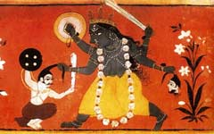

Калі (санскрит Kali - "чорна"), в індуїстської міфології одна з грізних іпостасей богині-матері Деві, або Дурги, дружини Шиви, уособлення смерті і руйнування. Вона з'явилася на світ з чорного від гніву чола Дурги: з криваво-червоними очима, чотирирукої; з розкритого рота звисав мову, закривавлений жертв; нагота її була прикрита лити поясом з відрубаних ворожих голів або рук, намистом з черепів і тигровій шкурою.
Подібно Шиві, Калі мала третє око в лобі. В одній руці вона тримала зброю, в іншій - відрубану голову Рактабіджі, дві руки підняті для благословення. Послідовники Калі вважали її люблячої богинею-матір'ю, здатної знищити смерть і демонів.
Один з міфів розповідає про те, як чудовисько Рактабіджа загрожувало світу. З кожної краплі крові, сочилася з його ран, народжувалося 1000 демонів. На прохання богів Калі випила кров Рактабіджі, потім проковтнула його самого. Святкуючи перемогу, вона пустилася в танок. Її рухи ставали все більш рвучкими, все навколо здригалася, і світу загрожувало руйнування. Боги благали Шиву зупинити шалений танець богині, але навіть йому не вдалося заспокоїти її. Тоді Шива ліг на землю перед Калі, і вона, продовжуючи танцювати, зневажала його, поки не усвідомила, що відбувається і не припинила танець. Місто Калькутта названий на честь богині; його назва означає "кроки Калі".
Індійське божество Калі -
1) в найдавнішу ведійську епоху один з епітетів бога вогню - Агні;
2) образ безжальної богині Калі, дружини Шиви, що носить також імена Парваті і Дурга. Калі, покровителька кладовищ, зображується танцюючою в колі привидів; для примирення її потрібні людські жертвоприношення.